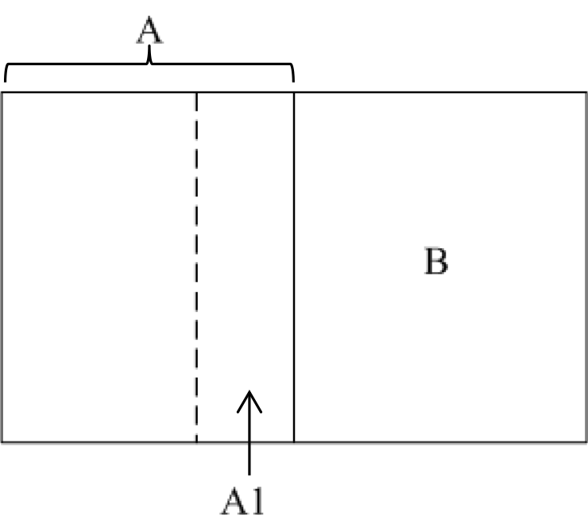

土地之分割合併與合併分割
土地之分割合併與合併分割不同。前者先分割，再合併；後者先合併，再分割。
• (一) 土地之分割合併
-
意義：一宗土地先分割，分割為數宗後，其中一宗土地再與鄰地合併。例如：A與B為相鄰二宗土地，A地先分割出A-1，A-1再與B地合併。[圖片1]
-
登記：一宗土地之部分合併於他土地時，應先行申請辦理分割（登§86）。換言之，先辦理分割登記，再辦理合併登記。
-
耕地分割：每宗耕地分割後每人所有面積未達0.25公頃者，不得分割。但因購置毗鄰耕地而與其耕地合併者，得為分割合併；同一所有權人之二宗以上毗鄰耕地，土地宗數未增加者，得為分割合併（農§16Ⅰ）。
• (二) 土地之合併分割
-
意義：數宗土地先合併，合併後之宗地再作分割。例如：A與B為相鄰二宗土地，A地與B地先合併為C地，C地再分割為D地、E地及F地。[圖片2]
-
登記：先辦理合併登記，再辦理分割登記。
-
法院裁判： (1)共有人相同：共有人相同之數不動產，除法令另有規定外，共有人得請求合併分割（民§824Ⅴ）。詳言之，共有人全部相同（須注意者，應有部分不必相同）之數不動產，任何共有人得訴請法院作合併分割。 (2)共有人部分相同：共有人部分相同之相鄰數不動產，各該不動產均具應有部分之共有人，經各不動產應有部分過半數共有人之同意，得請求合併分割。但法院認合併分割為不適當者，仍分別分割之（民§824Ⅵ）。詳言之，共有人部分相同之數相鄰不動產，符合下列條件，任何共有人得訴請法院裁判作合併分割：起訴人於各該不動產均具應有部分。經各不動產應有部分過半數之同意。須注意者，僅計算「應有部分」，無須計算「共有人數」。法院認為合併分割無不適當。
這篇文章考過哪些題目
讀完試著自己作答，再點進去對答案。依文字相似度自動比對，不一定完全對應。
- 110 地特三等《土地登記》第 3 題
A地號土地面積4,500平方公尺，民國（下同）70年經編定為一般農業區農牧用地迄今。當時，A地號土地原由甲、乙2人共有，… - 109 地政士《民法概要與信託法概要》第 2 題
何謂共有物合併分割？共有人在何種情形下，得請求合併分割？請依民法之規定說明之。（25 分）
文章圖片
